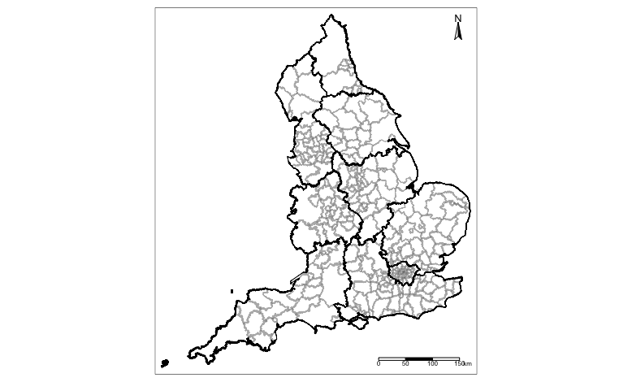
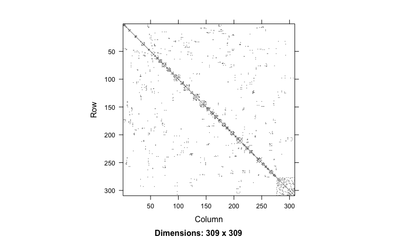
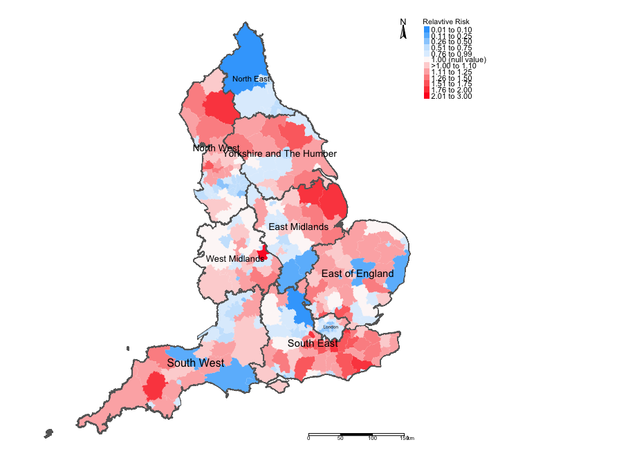
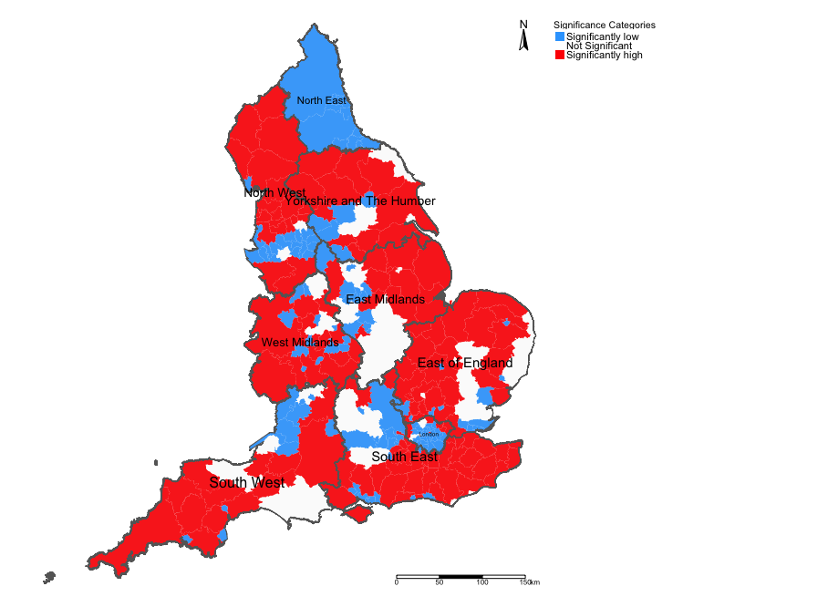
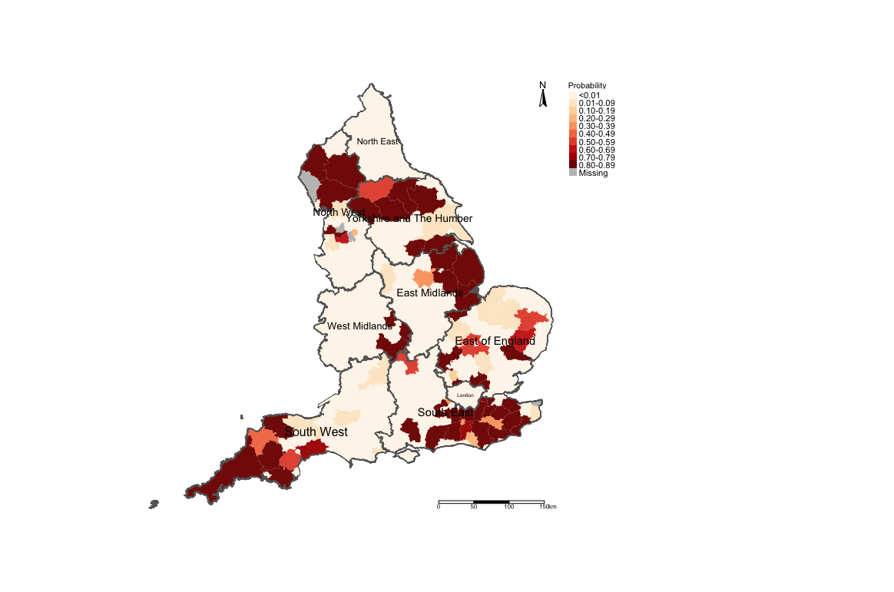
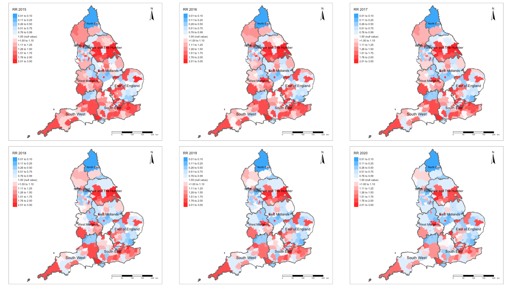
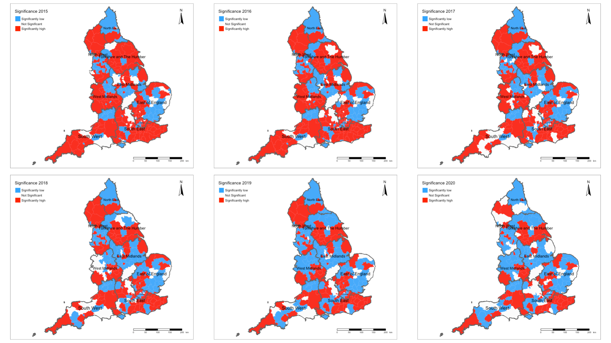

5 Spatial & Spatiotemporal Bayesian Models using INLA
Theme: Road Accidents & Casualties in the United Kingdom
5.1 Introduction
This week’s practical you will be introduced to applying spatial & spatiotemporal Bayesian models for the quantification of the risk of experiencing an outcome using R-INLA.
This exercise will focus on casualty data resulting from road accidents by car users (and/or occupants) in the UK. Road traffic accidents & injuries are a serious problem worldwide. In fact, it is one of the leading causes of death attributed to significant life-years lost and as a consequence is associated with considerable economic losses to impacted individuals and families. There are many individual, environmental and geographical risk factors for road-related casualties. Here, we will use a series of spatial models from a Bayesian framework risks of casualties due to road accidents in local authority areas across the England.
The learning objectives are:
How to implement the Spatial Conditional Autoregressive Model (CAR) to areal data that is not of a temporal structure.
How to extend the Spatial CAR to data that is of spatial and temporal structure.
For points 1 & 2, how to predict the area-specific relative risks (RR) for areal units and how to determine whether the levels of risk are statistically significant through 95% credible intervals (95% CrI)
How to determination the Exceedance Probability i.e., the probability that an area has an excess risk of an outcome which exceeds a given threshold (e.g., say a RR > 1 (null value)).
How to make adjustments for other risk factors and model selection using with
CPO,DICandWAICPoints 1 to 5 are scenarios which focus on outcomes following a Poisson process. Here, we will also demonstrate how spatial Bayesian models can be implemented to Binomial distributed outcomes as a special case for risk prediction (i.e., Odds Ratios (OR)).
Running
inla()for spatial Bayesian modelling
5.1.1 Downloadable dataset for this exercise
We will be using four different types of data sets for Week 8. Please download the following:
The first data focuses purely on spatial data without a temporal structure. The data is titled:
Road Accidents in England 2015-2020 NST.csv. It contain overall counts of all fatal and serious casualties resulted from a car accident over the 6-year periods. The variables included arelacode(local authority),gender(Female or Male),agegroup(1=20 years & below,2=21-35 years,3=36-50 years,4=51 to 65 years,5=66 to 80 yearsand6=81+ years)The second data is spatial the with the temporal structure. The data is titled:
Road Accidents in England 2015-2020 ST.csv. It contains all fatal and serious casualties resulted from a car accident broken down by each year from 2015 to 2020. It contains the same types of variables with addition to theyearcolumn.
All data sets for week 8 can be downloaded from HERE
5.1.2 Recommended reading list
- Book: Moraga. P, (2020). Geospatial Health Data: Modeling and Visualization with R-INLA & Shiny, (Link to Ebook)
Chapter 5: Areal data
Chapter 6: Spatial modeling of areal data. Lip cancer in Scotland
Chapter 7: Spatio-temporal modeling of areal data. Lung cancer in Ohio
- Book: Blangiardo. M, & Cameletti, M, (2015). Spatial and Spatio-temporal Bayesian Models with R-INLA. Wiley, ISBN: 978-1-118-32655-8. Access data sets HERE. Download example R-codes HERE
Chapter 6: Spatial Modeling (pages 173 to 234)
Chapter 7: Spatio-temporal models (pages 235 to 259)
5.2 Installing and loading packages
Here is the description of the following packages we will need for this exercise:
sf: Simple Featurestmap: Thematic Mappingspdep: Spatial Dependence (Weighting schemes & Spatial Statistics)SpatialEpi: Methods and data for cluster detection and disease mapping. We will use this for computing the expecting number for discrete outcomesINLA: Package for performing a full Bayesian analysis of additive models using Integrated Nested Laplace approximation
You have already installed the packages sf, tmap & spdep from previous sessions (i.e., GEOG0114 Principles of Spatial Analysis). Let us install the INLA and SpatialEpipackages.
# install the SpatialEpi
install.packages("SpatialEpi")
# install INLA package
install.packages("INLA",repos=c(getOption("repos"),INLA="https://inla.r-inla-download.org/R/stable"), dep=TRUE)
library("SpatialEpi")
library("INLA")
library("sf")
library("tmap")
library("spdep")5.3 Loading dataset
Let us load all quantitative data describe in section 5.1. into R/RStudio.
# set your own working directory setwd()
# use read.csv() to import csv data
# road accident data without temporal structure
road_acc_nontemp <- read.csv("Road Accidents in England 2015-2020 NST.csv", header = TRUE, sep = ",")
# road accident data with temporal structure
road_acc_temp <- read.csv("Road Accidents in England 2015-2020 ST.csv", header = TRUE, sep = ",")Let us all load the following shape files that we will need for today’s analysis:
- Shape file: England’s Regional borders named
England Regions Shapefile.shp - Shape file: England’s Local Authority borders (i.e., the unit of analysis) named
England Local Authority Shapefile.shp
# Use read_sf() function to load shape files
laboundaries <- read_sf("England Local Authority Shapefile.shp")
regionboundaries <- read_sf("England Regions Shapefile.shp")The code chunk below generates an empty map for England’s Local Authorities (LA) & regions superimposed using the tmap functions.
tm_shape(laboundaries) + tm_polygons(alpha = 0, border.alpha = 0.3) +
tm_shape(regionboundaries) + tm_polygons(alpha = 0, border.col = "black") +
tm_compass(position = c("right", "top")) + tm_scale_bar(position = c("right", "bottom"))
5.4 Spatial Bayesian Modelling (Non-temporal data)
5.4.1 Data preparation
In order to estimate the risk of casualties due to road accidents at a LA-level in England, we will need to create a data frame from the road_acc_nontemp object that contains both number of casualties, the denominators (i.e., reference population size) and the number of expected casualties. Note that each LA is disaggregated by gender (2) and age groups (6). You can view the data set to have an idea of its structure by typing View(road_acc_nontemp).
- Step 1: Aggregate the data down to the unit of analysis
# aggregate data to unit the area unit of analysis
aggregate_road_acc <- aggregate(list(road_acc_nontemp$casualties, road_acc_nontemp$population), FUN = sum, by = list(road_acc_nontemp$lacode, road_acc_nontemp$laname))
# reassign labelling to columns
names(aggregate_road_acc) <-c("lacode", "laname", "casualties", "population")- Step 2: Calculate the expected number of casualties from adjusted for the gender and age group break down & reference population size from the original data set (i.e.,
road_acc_nontemp), and then match the expected counts accordingly to its corresponding LA.
# Notes 1: before calculating the expecting counts do sort the dataset
# Notes 2: sort the original data in order of lacode, laname, gender and agegroup
sort_road_acc <- road_acc_nontemp[order(road_acc_nontemp$lacode, road_acc_nontemp$laname, road_acc_nontemp$gender, road_acc_nontemp$agegroup),]
# Notes 3: calculate the expected number of casualties from the number of gender, age groups & population size
# Notes 4: there are 2 gender groups & 6 age groups making a total of 12 strata in total
expected <- expected(population = sort_road_acc$population, cases = sort_road_acc$casualties, n.strata = 12)
# Notes 5: match the expected counts to their corresponding LA
aggregate_road_acc$expected <- expected[match(aggregate_road_acc$lacode, unique(sort_road_acc$lacode))]
# See output
head(aggregate_road_acc, n=10)## lacode laname casualties population expected
## 1 E07000223 Adur 584 383225 519.8091
## 2 E07000026 Allerdale 1191 584187 790.0976
## 3 E07000032 Amber Valley 814 758542 1048.8413
## 4 E07000224 Arun 1381 953450 1258.4688
## 5 E07000170 Ashfield 1068 757660 1073.3329
## 6 E07000105 Ashford 1827 767776 1066.7631
## 7 E07000004 Aylesbury Vale 1545 1186530 1684.7435
## 8 E07000200 Babergh 1210 547116 723.5206
## 9 E09000002 Barking and Dagenham 2375 1261005 1897.2852
## 10 E09000003 Barnet 3599 2338371 3486.1033Finally, in order to complete the steps for data preparation - we need to merge the aggregate_road_acc object to LA shape file. Let us call this new object analysis_data_nontemp
analysis_data_nontemp <- merge(laboundaries, aggregate_road_acc, by.x = "LAD21CD", by.y="lacode", all.x=TRUE)
names(analysis_data_nontemp)## [1] "LAD21CD" "OBJECTID" "LAD21NM" "laname" "casualties"
## [6] "population" "expected" "geometry"5.4.2 Creating an adjacency matrix
The next step is to create a neighbourhood or an adjacency matrix to define the spatial random effects in our Bayesian model. This creates a list of LA areas that shares borders with each other (i.e., contiguous boundaries). We can create these with poly2nb() and nb2INLA() functions.
# create the neighbourhood matrix as an INLA object
adjacencyMatrix <- poly2nb(analysis_data_nontemp)
nb2INLA("adjacencyObject.adj", adjacencyMatrix)
g <- inla.read.graph(filename = "adjacencyObject.adj")You can view the structure of the adjacency matrix for the England’s LA. The rows and columns identify as areas, whereas the blocks identify as neigbhours.

5.4.3 Model formation
We need to specify the likelihood function which is typically defining the statistical model needed for quantifying the risks of road-related casualties in England. Let us define the following items:
- Let \(Y_i\) represent the observed number of casualties in LA \(i\)
- Let \(E_i\) represent the expected number of casualties in LA \(i\) adjusted for the age-sex structure in the English population (see calculation in section 5.4.1)
- Let \(\theta_i\) represent the relative risk of casualties in LA \(i\) whereby a \(\theta_i<1\) is an area with lower risk; \(\theta_i=1\) has no risk at all; and \(\theta_i>1\) is an area that has an increased risk of road-related casualties. Note: this the posterior distribution we want to estimate.
- Let \(u_i\) be the spatial random effects specific to LA \(i\) to account for the spatial dependence in the relative risks
- Finally, let \(v_i\) be the error that is specific to each LA \(i\) to account for the non-spatial dependence or uncorrelated variability in the relative risk. It has a \(N(0, \sigma_v^{2})\)
The model formulation:
\[Y_i \sim Poisson(E_i\theta_i)\] \[log(\theta_i) = \alpha+u_i + v_i\]
This type of model is known as the Besag-York-Mollie (BYM) model. It is commonly referred to as the Spatial Conditional Autoregressive Model (CAR). Here, \(\alpha\) represents the overall relative risk through the study region. Adding the \(u_i\) and \(v_i\) will result in the estimation of the relative risk that is specific to area \(i\). Note the you will have to take the exponential of the results to get the risk ratio i.e., \(exp(\alpha)\) (overall risk) and \(exp(u_i + v_i)\) (area-specific risk).
NOTE: You can include covariates in the model which means that you must have area-level information measured for each area unit.
We can begin developing the formula:
- Step 1: Start by specifying the index variable for the spatial random effects \(u_i\). This is done simply by linking the row numbers to them.
# specify the id number for the random effect
analysis_data_nontemp$uI <- 1:nrow(analysis_data_nontemp)- Step 2: We specified the likelihood function as Poisson distribution because we are dealing with count data as an outcome. Now, we need to state the prior distributions for the parameters \(u_i\) and \(v_i\). By default, we use priors of the gamma distribution since its a conjugate (see Week 7’s lecture). The informative priors are specified minimally on the log of the spatial random effects i.e., \(log(\tau_u) \sim logGamma(1, 0.0005)\), and for the uncorrelated error its the same i.e., \(log(\tau_v) \sim logGamma(1, 0.0005)\).
# specify priors
prior <- list(
prec = list(prior = "loggamma", param = c(1, 0.0005)), # set prior for spatial random effects
phi = list(prior = "loggamma", param = c(1, 0.0005)) # set prior for spatial random effects
)- Step 3: Write the formula with the outcome
casualtieson the left side. The1is the intercept, and the \(u_i\) and \(v_i\) are capture in thef()function on the right. Here, we must specify the following: (1.) the indexed variable i.e.,uI; (2.) specify that we are using the CAR model in themodeloption i.e.,model = "bym2", (3.) the neighbourhood matrix in thegraphoption i.e,graph = gand (4.) our priors in thehyperoption i.e.,hyper = prior
# formula
formula = casualties ~ 1 + f(uI, model = "bym2", graph = g, hyper = prior)5.4.4 Bayesian inference using INLA
We can now fit model by calling the inla() function. The arguments of this function are the formula created in step 3 (see section 5.4.3), the family option which is family = "poisson", our data frame i.e., analysis_data_nontemp and expected counts option E i.e., E = expected. We want the posteriors so always include the option control.predictor = list(compute = TRUE). Finally, we churn out the Deviance Information Criteria (DIC) (we will come back to this later!) with this option included: control.compute = list(dic = TRUE)
Here is the full code:
riskestimates <- inla(formula, family = "poisson", data = analysis_data_nontemp, E = expected, control.predictor = list(compute = TRUE), control.compute = list(dic = TRUE))
# show results
summary(riskestimates)##
## Call:
## c("inla(formula = formula, family = \"poisson\", data =
## analysis_data_nontemp, ", " E = expected, control.compute = list(dic =
## TRUE), control.predictor = list(compute = TRUE))" )
## Time used:
## Pre = 2.81, Running = 0.9, Post = 0.169, Total = 3.88
## Fixed effects:
## mean sd 0.025quant 0.5quant 0.975quant mode kld
## (Intercept) -0.011 0.018 -0.048 -0.01 0.026 -0.009 0
##
## Random effects:
## Name Model
## uI BYM2 model
##
## Model hyperparameters:
## mean sd 0.025quant 0.5quant 0.975quant mode
## Precision for uI 1.702 0.157 1.411 1.697 2.03 1.69
## Phi for uI 0.998 0.003 0.992 0.999 1.00 1.00
##
## Expected number of effective parameters(stdev): 299.29(0.104)
## Number of equivalent replicates : 1.01
##
## Deviance Information Criterion (DIC) ...............: 3354.03
## Deviance Information Criterion (DIC, saturated) ....: 667.78
## Effective number of parameters .....................: 299.31
##
## Marginal log-Likelihood: -2255.08
## Posterior marginals for the linear predictor and
## the fitted values are computedInterpretation of the overall risks
From the summary table, we can report the overall risk for road-related casualties. In the summary table under the Fixed effects: section. The overall posterior mean (i.e. \(\alpha\)) is -0.011 with 95% credibility limits from -0.048 (under 0.025quant) to 0.026 (under 0.975). If we take the exponential of these values we get an RR = 0.989 (95% CrI: 0.953 to 1.026). This is interpreted as follows:
The posterior mean of the exponentiated parameter \(\alpha\) implies that risk of road-related casualties across England is 0.98 times lower (or 2.0% lower), with a 95% credibility interval ranging from 0.953 to 1.026 (or -4.7% to +2.6%)
Mapping the Relative Risks (RR) of casualties in England
We can extract the area-specific risks (already exponentiated) for each LA of England pulling them using $summary.fitted.values on the object riskestimates. These results can be extracted simply by write the
following code:
# Notes: extract the risk ratios and store in 'riskratio'
riskratio <- riskestimates$summary.fitted.values
head(riskratio, n=10)## mean sd 0.025quant 0.5quant 0.975quant
## fitted.Predictor.001 0.6427167 0.02847723 0.5879711 0.6423319 0.6996345
## fitted.Predictor.002 0.7937453 0.02536789 0.7447218 0.7934980 0.8441913
## fitted.Predictor.003 0.6804390 0.02450434 0.6331633 0.6801696 0.7292498
## fitted.Predictor.004 0.6357273 0.01942254 0.5981659 0.6355460 0.6743276
## fitted.Predictor.005 0.9145468 0.03192813 0.8529223 0.9142065 0.9781173
## fitted.Predictor.006 0.8092004 0.02718071 0.7567133 0.8089217 0.8632894
## fitted.Predictor.007 1.0464771 0.02422309 0.9994677 1.0463055 1.0944437
## fitted.Predictor.008 1.4328174 0.03326268 1.3682669 1.4325810 1.4986868
## fitted.Predictor.009 1.2911314 0.03320757 1.2267574 1.2908705 1.3569786
## fitted.Predictor.010 1.0088329 0.02075682 0.9685101 1.0087024 1.0498964
## mode
## fitted.Predictor.001 0.6415606
## fitted.Predictor.002 0.7930016
## fitted.Predictor.003 0.6796292
## fitted.Predictor.004 0.6351821
## fitted.Predictor.005 0.9135240
## fitted.Predictor.006 0.8083624
## fitted.Predictor.007 1.0459612
## fitted.Predictor.008 1.4321069
## fitted.Predictor.009 1.2903474
## fitted.Predictor.010 1.0084403The important estimates here are the posterior mean and 95% CrI results from the riskratio object. We can extract as add them to the spatial data frame analysis_data_notemp object. These estimates are already in alignment with the areas in the shapefile, and so do not worry.
Let us realign the results in the shape file accordingly:
analysis_data_nontemp$RR <- riskratio[, "mean"] # Relative risk
analysis_data_nontemp$LL <- riskratio[, "0.025quant"] # Lower credibility limit
analysis_data_nontemp$UL <- riskratio[, "0.975quant"] # Upper credibility limit
head(analysis_data_nontemp)## Simple feature collection with 6 features and 11 fields
## Geometry type: MULTIPOLYGON
## Dimension: XY
## Bounding box: xmin: 344666.1 ymin: 378867 xmax: 478453.7 ymax: 537152
## Projected CRS: OSGB36 / British National Grid
## LAD21CD OBJECTID LAD21NM laname casualties
## 1 E06000001 1 Hartlepool Hartlepool 506
## 2 E06000002 2 Middlesbrough Middlesbrough 976
## 3 E06000003 3 Redcar and Cleveland Redcar and Cleveland 766
## 4 E06000004 4 Stockton-on-Tees Stockton-on-Tees 1066
## 5 E06000005 5 Darlington Darlington 817
## 6 E06000006 6 Halton Halton 882
## population expected geometry uI RR LL
## 1 559103 788.3403 MULTIPOLYGON (((447213.9 53... 1 0.6427167 0.5879711
## 2 843085 1230.5828 MULTIPOLYGON (((448489.9 52... 2 0.7937453 0.7447218
## 3 817921 1127.9226 MULTIPOLYGON (((455525.9 52... 3 0.6804390 0.6331633
## 4 1179553 1679.3618 MULTIPOLYGON (((444157 5279... 4 0.6357273 0.5981659
## 5 639443 893.8510 MULTIPOLYGON (((423496.6 52... 5 0.9145468 0.8529223
## 6 769221 1090.9852 MULTIPOLYGON (((351539.9 38... 6 0.8092004 0.7567133
## UL
## 1 0.6996345
## 2 0.8441913
## 3 0.7292498
## 4 0.6743276
## 5 0.9781173
## 6 0.8632894Let’s visual the areas with low and high risks as well as show a map that indicators which areas are statistically significant. The following code is creating maps that are publication-worthy. We will do the following:
- Step 1: Create the column for the divergent legends
# Get a feel of the lower and highest value of RR
summary(analysis_data_nontemp$RR)## Min. 1st Qu. Median Mean 3rd Qu. Max.
## 0.007379 0.773615 1.022300 1.060023 1.338424 3.097010#min:0.007379
#max:3.097010
# Notes 1: create risk categories for legend for map
# Notes 2: RR = 1 is the mid-point of the legend
RiskCategorylist <- c("0.01 to 0.10", "0.11 to 0.25", "0.26 to 0.50", "0.51 to 0.75", "0.76 to 0.99", "1.00 (null value)",
">1.00 to 1.10", "1.11 to 1.25", "1.26 to 1.50", "1.51 to 1.75", "1.76 to 2.00", "2.01 to 3.00",
"Above 3.00")
# Create the colours for the above categories - from extreme blues to extreme reds
RRPalette <- c("#33a6fe","#65bafe","#98cffe","#cbe6fe","#dfeffe","#fef9f9","#fed5d5","#feb1b1","#fe8e8e","#fe6a6a","#fe4646","#fe2424","#fe0000")
# Now generate categories
analysis_data_nontemp$RelativeRiskCat <- NA
analysis_data_nontemp$RelativeRiskCat[analysis_data_nontemp$RR>= 0 & analysis_data_nontemp$RR <= 0.10] <- -5
analysis_data_nontemp$RelativeRiskCat[analysis_data_nontemp$RR> 0.10 & analysis_data_nontemp$RR <= 0.25] <- -4
analysis_data_nontemp$RelativeRiskCat[analysis_data_nontemp$RR> 0.25 & analysis_data_nontemp$RR <= 0.50] <- -3
analysis_data_nontemp$RelativeRiskCat[analysis_data_nontemp$RR> 0.50 & analysis_data_nontemp$RR <= 0.75] <- -2
analysis_data_nontemp$RelativeRiskCat[analysis_data_nontemp$RR> 0.75 & analysis_data_nontemp$RR < 1] <- -1
analysis_data_nontemp$RelativeRiskCat[analysis_data_nontemp$RR == 1] <- 0
analysis_data_nontemp$RelativeRiskCat[analysis_data_nontemp$RR> 1.00 & analysis_data_nontemp$RR <= 1.10] <- 1
analysis_data_nontemp$RelativeRiskCat[analysis_data_nontemp$RR> 1.10 & analysis_data_nontemp$RR <= 1.25] <- 2
analysis_data_nontemp$RelativeRiskCat[analysis_data_nontemp$RR> 1.25 & analysis_data_nontemp$RR <= 1.50] <- 3
analysis_data_nontemp$RelativeRiskCat[analysis_data_nontemp$RR> 1.50 & analysis_data_nontemp$RR <= 1.75] <- 4
analysis_data_nontemp$RelativeRiskCat[analysis_data_nontemp$RR> 1.75 & analysis_data_nontemp$RR <= 2.00] <- 5
analysis_data_nontemp$RelativeRiskCat[analysis_data_nontemp$RR> 2.00 & analysis_data_nontemp$RR <= 3.00] <- 6
analysis_data_nontemp$RelativeRiskCat[analysis_data_nontemp$RR> 3.00 & analysis_data_nontemp$RR <= 250] <- 7- Step 2: Create the column for the significance categories
# create categories to define if an area has significant increase or decrease or not all
analysis_data_nontemp$Significance <- NA
analysis_data_nontemp$Significance[analysis_data_nontemp$LL<1 & analysis_data_nontemp$UL>1] <- 0 # NOT SIGNIFICANT
analysis_data_nontemp$Significance[analysis_data_nontemp$LL==1 | analysis_data_nontemp$UL==1] <- 0 # NOT SIGNIFICANT
analysis_data_nontemp$Significance[analysis_data_nontemp$LL>1 & analysis_data_nontemp$UL>1] <- 1 # SIGNIFICANT INCREASE
analysis_data_nontemp$Significance[analysis_data_nontemp$LL<1 & analysis_data_nontemp$UL<1] <- -1 # SIGNIFICANT DECREASE- Step 3: Generate maps for relative risk & significant regions
# map of relative risk
tm_shape(analysis_data_nontemp) +
tm_fill("RelativeRiskCat", style = "cat", title = "Relavtive Risk", palette = RRPalette, labels = RiskCategorylist) +
tm_shape(regionboundaries) + tm_polygons(alpha = 0.05) + tm_text("name", size = "AREA") +
tm_layout(frame = FALSE, legend.outside = TRUE, legend.title.size = 0.8, legend.text.size = 0.7) +
tm_compass(position = c("right", "top")) + tm_scale_bar(position = c("right", "bottom"))
# map of significance regions
tm_shape(analysis_data_nontemp) +
tm_fill("Signficance", style = "cat", title = "Significance Categories", palette = c("#33a6fe", "white", "#fe0000"), labels = c("Significantly low", "Not Significant", "Significantly high")) +
tm_shape(regionboundaries) + tm_polygons(alpha = 0.10) + tm_text("name", size = "AREA") +
tm_layout(frame = FALSE, legend.position = c("right", "bottom"), legend.outside = TRUE, legend.title.size = 0.8, legend.text.size = 0.7) +
tm_compass(position = c("right", "top")) + tm_scale_bar(position = c("right", "bottom"))
Mapping the Exceedance Probability of excess risk of casualties in England
The Exceedance probabilities are essential the marginals for the relative risk. Usually, we are interested in areas that have high risk only (i.e., RR > 1). We can compute the probability that the relative risk exceeds the threshold null value of 1 (i.e., an LA has an excess risk of road casualties) - such areas that are significant with very high marginal probabilities are usually a focus for implementing some intervention or actioning some public health or social policy to reduce the burden.
We can extract these probabilities for each LA of England by pulling them using the inla.pmarginal() function to store into the object Prob.
Prob <- round(sapply(riskestimates$marginals.fitted.values, FUN = function(marg){1 - inla.pmarginal(q = 1, marginal = marg)}), 3)Let us realign the probabilities in the shape file and categorise them accordingly:
analysis_data_nontemp$Pr <- Prob
analysis_data_nontemp$ProbCat <- NA
analysis_data_nontemp$ProbCat[analysis_data_nontemp$Pr>=0 & analysis_data_nontemp$Pr< 0.01] <- 1
analysis_data_nontemp$ProbCat[analysis_data_nontemp$Pr>=0.01 & analysis_data_nontemp$Pr< 0.10] <- 2
analysis_data_nontemp$ProbCat[analysis_data_nontemp$Pr>=0.10 & analysis_data_nontemp$Pr< 0.20] <- 3
analysis_data_nontemp$ProbCat[analysis_data_nontemp$Pr>=0.20 & analysis_data_nontemp$Pr< 0.30] <- 4
analysis_data_nontemp$ProbCat[analysis_data_nontemp$Pr>=0.30 & analysis_data_nontemp$Pr< 0.40] <- 5
analysis_data_nontemp$ProbCat[analysis_data_nontemp$Pr>=0.40 & analysis_data_nontemp$Pr< 0.50] <- 6
analysis_data_nontemp$ProbCat[analysis_data_nontemp$Pr>=0.50 & analysis_data_nontemp$Pr< 0.60] <- 7
analysis_data_nontemp$ProbCat[analysis_data_nontemp$Pr>=0.60 & analysis_data_nontemp$Pr< 0.70] <- 8
analysis_data_nontemp$ProbCat[analysis_data_nontemp$Pr>=0.70 & analysis_data_nontemp$Pr< 0.80] <- 9
analysis_data_nontemp$ProbCat[analysis_data_nontemp$Pr>=0.80 & analysis_data_nontemp$Pr< 0.90] <- 10
analysis_data_nontemp$ProbCat[analysis_data_nontemp$Pr>=0.90 & analysis_data_nontemp$Pr<= 1.00] <- 11Map the Exceedance probabilities:
ProbCategorylist <- c("<0.01", "0.01-0.09", "0.10-0.19", "0.20-0.29", "0.30-0.39", "0.40-0.49","0.50-0.59", "0.60-0.69", "0.70-0.79", "0.80-0.89", "0.90-1.00")
# map of exceedance probabilities
tm_shape(analysis_data_nontemp) +
tm_fill("ProbCat", style = "cat", title = "Probability", palette = "OrRd", labels = ProbCategorylist) +
tm_shape(regionboundaries) + tm_polygons(alpha = 0.05) + tm_text("name", size = "AREA") +
tm_layout(frame = FALSE, legend.outside = TRUE, legend.title.size = 0.8, legend.text.size = 0.7) +
tm_compass(position = c("right", "top")) + tm_scale_bar(position = c("right", "bottom"))
5.5 Spatiotemporal Bayesian Modelling
5.5.1 Data preparation
Since we are dealing with temporal data - the data preparation is slightly different from section 5.4.1. The only difference is we will need to aggregate the data by gender, age groups and year to recalculate the expected counts. We are using the data frame road_acc_temp object we imported earlier.
- Step 1: Aggregate the data down to the unit of analysis
road_acc_temp <- read.csv("Road Accidents in England 2015-2020 ST.csv", header = TRUE, sep = ",")
aggregate_road_temp <- aggregate(list(road_acc_temp$casualties, road_acc_temp$population), FUN = sum, by = list(road_acc_temp$year ,road_acc_temp$lacode, road_acc_temp$laname))
names(aggregate_road_temp) <-c("year" ,"lacode", "laname", "casualties", "population")- Step 2: Calculate the expected number of casualties (adjusted for
gender,agegroup&year)
# calculate expected counts from original data
sort_road_temp <- road_acc_temp[order(road_acc_temp$year, road_acc_temp$lacode, road_acc_temp$laname, road_acc_temp$gender, road_acc_temp$agegroup),]
expected_temp <- expected(population = sort_road_temp$population, cases = sort_road_temp$casualties, n.strata = 12)The cleaning is a little bit involved. We need have the expected counts to be aligned with its corresponding LA and year. This code can do the trick (… its a bit shabby but it works!):
# The cleaning is a bit involve here.
# extract the length for year = 6
nyrs <- length(unique(sort_road_temp$year))
# expand each lacode 6 times
laE <- rep(unique(sort_road_temp$lacode), each = nyrs)
# extract the length for lacode = 309
nla <- length(unique(sort_road_temp$lacode))
# expand each lyear 309 times
yrsE <- rep(unique(sort_road_temp$year), times = nla)Now create a temporal data frame with Expected values:
temporalExpected <- data.frame(lacode = laE, year = yrsE, E=expected_temp)
head(temporalExpected, n = 20)## lacode year E
## 1 E06000001 2015 130.74244
## 2 E06000001 2016 203.20507
## 3 E06000001 2017 187.37917
## 4 E06000001 2018 279.83468
## 5 E06000001 2019 149.15446
## 6 E06000001 2020 180.89620
## 7 E06000002 2015 297.22393
## 8 E06000002 2016 214.62776
## 9 E06000002 2017 196.66798
## 10 E06000002 2018 390.25377
## 11 E06000002 2019 450.15132
## 12 E06000002 2020 226.32541
## 13 E06000003 2015 237.67881
## 14 E06000003 2016 305.12202
## 15 E06000003 2017 372.13022
## 16 E06000003 2018 530.12429
## 17 E06000003 2019 51.87521
## 18 E06000003 2020 499.71453
## 19 E06000004 2015 258.65683
## 20 E06000004 2016 246.82889Step 3: Align expected values with aggregated_road_temp by merging them to shape file.
data_long <- merge(aggregate_road_temp, temporalExpected, by.x=c("year","lacode"), by.y=c("year","lacode"))
analysis_data_temp <- merge(laboundaries, data_long, by.x = "LAD21CD", by.y="lacode", all.x=TRUE)5.5.2 Model formation & inference with INLA
We use the same likelihood function for quantifying the spatiotemporal risks of road-related casualties in England. We can use the same adjaceny matrix constructed in section 5.4.2. dDue to the time component, the model formulation is slightly altered with the following:
- Let \(Y_{ij}\) represent the observed number of casualties in LA \(i\) and year \(j\)
- Let \(E_{ij}\) represent the expected number of casualties in LA \(i\) and \(j\) adjusted for the age-sex structure in the English population.
- Let \(\theta_{ij}\) represent the relative risk of casualties in LA \(i\) and year \(j\) whereby a \(\theta_{ij}<1\) is an area on a specific year with lower risk; \(\theta_{ij}=1\) has no risk at all; and \(\theta_{ij}>1\) is an area on a specific year that has an increased risk of road-related casualties. Note: this the posterior distribution we want to estimate.
- Let \(u_i\) be the spatial random effects specific to LA \(i\) only to account for the spatial dependence in the relative risks
- Let \(v_i\) be the error that is specific to each LA \(i\) only to account for the non-spatial dependence or uncorrelated variability in the relative risk. It has a \(N(0, \sigma_v^{2})\)
- \(\beta + \delta_i\) is the global linear trend \(\beta\) which varies at an LA-level by adding \(\delta_i\).
- Finally, \(t_j\) is the year.
The model formulation:
\[Y_i \sim Poisson(E_{ij}\theta_{ij})\] \[log(\theta_{ij}) = \alpha+u_i + v_i + (\beta+\delta_i)\cdot t_j\] We can begin developing the formula above:
analysis_data_temp <- analysis_data_temp[order(analysis_data_temp$LAD21CD, analysis_data_temp$year),]
analysis_data_temp$idyear <- analysis_data_temp$year
analysis_data_temp$OBJECTID2 <- analysis_data_temp$OBJECTIDRun the inla() function:
formulaTemp <- casualties ~ f(OBJECTID, model="bym", graph=g) + f(OBJECTID2, idyear, model="iid") + idyear
tempRiskEstimates <- inla(formulaTemp, family = "poisson", data = analysis_data_temp, E = expected, control.predictor = list(compute = TRUE))Let put all the result together:
riskratio <- tempRiskEstimates$summary.fitted.values
head(riskratio, n=10)
analysis_data_temp$RR <- riskratio[, "mean"] # Relative risk
analysis_data_temp$LL <- riskratio[, "0.025quant"] # Lower credibility limit
analysis_data_temp$UL <- riskratio[, "0.975quant"] # Upper credibility limit
# Get a feel of the lower and highest value of RR
summary(analysis_data_temp$RR)
#min:0.00117
#max:166.30556
# Notes 1: create risk categories for legend for map
# Notes 2: RR = 1 is the mid-point of the legend
RiskCategorylist <- c("0.01 to 0.10", "0.11 to 0.25", "0.26 to 0.50", "0.51 to 0.75", "0.76 to 0.99", "1.00 (null value)",
">1.00 to 1.10", "1.11 to 1.25", "1.26 to 1.50", "1.51 to 1.75", "1.76 to 2.00", "2.01 to 3.00",
"Above 3.00")
# Create the colours for the above categories - from extreme blues to extreme reds
RRPalette <- c("#33a6fe","#65bafe","#98cffe","#cbe6fe","#dfeffe","#fef9f9","#fed5d5","#feb1b1","#fe8e8e","#fe6a6a","#fe4646","#fe2424","#fe0000")
# Now generate categories RR temporal
analysis_data_temp$RelativeRiskCat <- NA
analysis_data_temp$RelativeRiskCat[analysis_data_temp$RR>= 0 & analysis_data_temp$RR <= 0.10] <- -5
analysis_data_temp$RelativeRiskCat[analysis_data_temp$RR> 0.10 & analysis_data_temp$RR <= 0.25] <- -4
analysis_data_temp$RelativeRiskCat[analysis_data_temp$RR> 0.25 & analysis_data_temp$RR <= 0.50] <- -3
analysis_data_temp$RelativeRiskCat[analysis_data_temp$RR> 0.50 & analysis_data_temp$RR <= 0.75] <- -2
analysis_data_temp$RelativeRiskCat[analysis_data_temp$RR> 0.75 & analysis_data_temp$RR < 1] <- -1
analysis_data_temp$RelativeRiskCat[analysis_data_temp$RR == 1] <- 0
analysis_data_temp$RelativeRiskCat[analysis_data_temp$RR> 1.00 & analysis_data_temp$RR <= 1.10] <- 1
analysis_data_temp$RelativeRiskCat[analysis_data_temp$RR> 1.10 & analysis_data_temp$RR <= 1.25] <- 2
analysis_data_temp$RelativeRiskCat[analysis_data_temp$RR> 1.25 & analysis_data_temp$RR <= 1.50] <- 3
analysis_data_temp$RelativeRiskCat[analysis_data_temp$RR> 1.50 & analysis_data_temp$RR <= 1.75] <- 4
analysis_data_temp$RelativeRiskCat[analysis_data_temp$RR> 1.75 & analysis_data_temp$RR <= 2.00] <- 5
analysis_data_temp$RelativeRiskCat[analysis_data_temp$RR> 2.00 & analysis_data_temp$RR <= 3.00] <- 6
analysis_data_temp$RelativeRiskCat[analysis_data_temp$RR> 3.00 & analysis_data_temp$RR <= 250] <- 7
# Significance
analysis_data_temp$Significance <- NA
analysis_data_temp$Significance[analysis_data_temp$LL<1 & analysis_data_temp$UL>1] <- 0 # NOT SIGNIFICANT
analysis_data_temp$Significance[analysis_data_temp$LL==1 | analysis_data_temp$UL==1] <- 0 # NOT SIGNIFICANT
analysis_data_temp$Significance[analysis_data_temp$LL>1 & analysis_data_temp$UL>1] <- 1 # SIGNIFICANT INCREASE
analysis_data_temp$Significance[analysis_data_temp$LL<1 & analysis_data_temp$UL<1] <- -1 # SIGNIFICANT DECREASE
Prob <- round(sapply(tempRiskEstimates$marginals.fitted.values, FUN = function(marg){1 - inla.pmarginal(q = 1, marginal = marg)}), 3)
analysis_data_temp$Pr <- Prob
analysis_data_temp$ProbCat <- NA
analysis_data_temp$ProbCat[analysis_data_temp$Pr>=0 & analysis_data_nontemp$Pr< 0.01] <- 1
analysis_data_temp$ProbCat[analysis_data_temp$Pr>=0.01 & analysis_data_temp$Pr< 0.10] <- 2
analysis_data_temp$ProbCat[analysis_data_temp$Pr>=0.10 & analysis_data_temp$Pr< 0.20] <- 3
analysis_data_temp$ProbCat[analysis_data_temp$Pr>=0.20 & analysis_data_temp$Pr< 0.30] <- 4
analysis_data_temp$ProbCat[analysis_data_temp$Pr>=0.30 & analysis_data_temp$Pr< 0.40] <- 5
analysis_data_temp$ProbCat[analysis_data_temp$Pr>=0.40 & analysis_data_temp$Pr< 0.50] <- 6
analysis_data_temp$ProbCat[analysis_data_temp$Pr>=0.50 & analysis_data_temp$Pr< 0.60] <- 7
analysis_data_temp$ProbCat[analysis_data_temp$Pr>=0.60 & analysis_data_temp$Pr< 0.70] <- 8
analysis_data_temp$ProbCat[analysis_data_temp$Pr>=0.70 & analysis_data_temp$Pr< 0.80] <- 9
analysis_data_temp$ProbCat[analysis_data_temp$Pr>=0.80 & analysis_data_temp$Pr< 0.90] <- 10
analysis_data_temp$ProbCat[analysis_data_temp$Pr>=0.90 & analysis_data_temp$Pr<= 1.00] <- 11
ProbCategorylist <- c("<0.01", "0.01-0.09", "0.10-0.19", "0.20-0.29", "0.30-0.39", "0.40-0.49","0.50-0.59", "0.60-0.69",
"0.70-0.79", "0.80-0.89", "0.90-1.00")
# split data,frame to years
temp2015 <- analysis_data_temp[analysis_data_temp$year==2015,]
temp2016 <- analysis_data_temp[analysis_data_temp$year==2016,]
temp2017 <- analysis_data_temp[analysis_data_temp$year==2017,]
temp2018 <- analysis_data_temp[analysis_data_temp$year==2018,]
temp2019 <- analysis_data_temp[analysis_data_temp$year==2019,]
temp2020 <- analysis_data_temp[analysis_data_temp$year==2020,]
# generate maps
# map of relative risk
p1 <- tm_shape(temp2015) +
tm_fill("RelativeRiskCat", style = "cat", title = "RR 2015", palette = RRPalette, labels = RiskCategorylist) +
tm_shape(regionboundaries) + tm_polygons(alpha = 0.05) + tm_text("name", size = "AREA") +
tm_compass(position = c("right", "top")) + tm_scale_bar(position = c("right", "bottom"))
p2 <- tm_shape(temp2016) +
tm_fill("RelativeRiskCat", style = "cat", title = "RR 2016", palette = RRPalette, labels = RiskCategorylist) +
tm_shape(regionboundaries) + tm_polygons(alpha = 0.05) + tm_text("name", size = "AREA") +
tm_compass(position = c("right", "top")) + tm_scale_bar(position = c("right", "bottom"))
p3 <- tm_shape(temp2017) +
tm_fill("RelativeRiskCat", style = "cat", title = "RR 2017", palette = RRPalette, labels = RiskCategorylist) +
tm_shape(regionboundaries) + tm_polygons(alpha = 0.05) + tm_text("name", size = "AREA") +
tm_compass(position = c("right", "top")) + tm_scale_bar(position = c("right", "bottom"))
p4 <- tm_shape(temp2018) +
tm_fill("RelativeRiskCat", style = "cat", title = "RR 2018", palette = RRPalette, labels = RiskCategorylist) +
tm_shape(regionboundaries) + tm_polygons(alpha = 0.05) + tm_text("name", size = "AREA") +
tm_compass(position = c("right", "top")) + tm_scale_bar(position = c("right", "bottom"))
p5 <- tm_shape(temp2019) +
tm_fill("RelativeRiskCat", style = "cat", title = "RR 2019", palette = RRPalette, labels = RiskCategorylist) +
tm_shape(regionboundaries) + tm_polygons(alpha = 0.05) + tm_text("name", size = "AREA") +
tm_compass(position = c("right", "top")) + tm_scale_bar(position = c("right", "bottom"))
p6 <- tm_shape(temp2020) +
tm_fill("RelativeRiskCat", style = "cat", title = "RR 2020", palette = RRPalette, labels = RiskCategorylist) +
tm_shape(regionboundaries) + tm_polygons(alpha = 0.05) + tm_text("name", size = "AREA") +
tm_compass(position = c("right", "top")) + tm_scale_bar(position = c("right", "bottom"))
# plot RR maps together
tmap_arrange(p1, p2, p3, p4, p5, p6, nrow = 2)
# map of significance regions
s1 <- tm_shape(temp2015) +
tm_fill("Significance", style = "cat", title = "Significance 2015", palette = c("#33a6fe", "white", "#fe0000"), labels = c("Significantly low", "Not Significant", "Significantly high")) +
tm_shape(regionboundaries) + tm_polygons(alpha = 0.10) + tm_text("name", size = "AREA") +
tm_compass(position = c("right", "top")) + tm_scale_bar(position = c("right", "bottom"))
s2 <- tm_shape(temp2016) +
tm_fill("Significance", style = "cat", title = "Significance 2016", palette = c("#33a6fe", "white", "#fe0000"), labels = c("Significantly low", "Not Significant", "Significantly high")) +
tm_shape(regionboundaries) + tm_polygons(alpha = 0.10) + tm_text("name", size = "AREA") +
tm_compass(position = c("right", "top")) + tm_scale_bar(position = c("right", "bottom"))
s3 <- tm_shape(temp2017) +
tm_fill("Significance", style = "cat", title = "Significance 2017", palette = c("#33a6fe", "white", "#fe0000"), labels = c("Significantly low", "Not Significant", "Significantly high")) +
tm_shape(regionboundaries) + tm_polygons(alpha = 0.10) + tm_text("name", size = "AREA") +
tm_compass(position = c("right", "top")) + tm_scale_bar(position = c("right", "bottom"))
s4 <- tm_shape(temp2018) +
tm_fill("Significance", style = "cat", title = "Significance 2018", palette = c("#33a6fe", "white", "#fe0000"), labels = c("Significantly low", "Not Significant", "Significantly high")) +
tm_shape(regionboundaries) + tm_polygons(alpha = 0.10) + tm_text("name", size = "AREA") +
tm_compass(position = c("right", "top")) + tm_scale_bar(position = c("right", "bottom"))
s5 <- tm_shape(temp2019) +
tm_fill("Significance", style = "cat", title = "Significance 2019", palette = c("#33a6fe", "white", "#fe0000"), labels = c("Significantly low", "Not Significant", "Significantly high")) +
tm_shape(regionboundaries) + tm_polygons(alpha = 0.10) + tm_text("name", size = "AREA") +
tm_compass(position = c("right", "top")) + tm_scale_bar(position = c("right", "bottom"))
s6 <- tm_shape(temp2020) +
tm_fill("Significance", style = "cat", title = "Significance 2020", palette = c("#33a6fe", "white", "#fe0000"), labels = c("Significantly low", "Not Significant", "Significantly high")) +
tm_shape(regionboundaries) + tm_polygons(alpha = 0.10) + tm_text("name", size = "AREA") +
tm_compass(position = c("right", "top")) + tm_scale_bar(position = c("right", "bottom"))
# plot Sign maps together
tmap_arrange(s1, s2, s3, s4, s5, s6, nrow = 2)